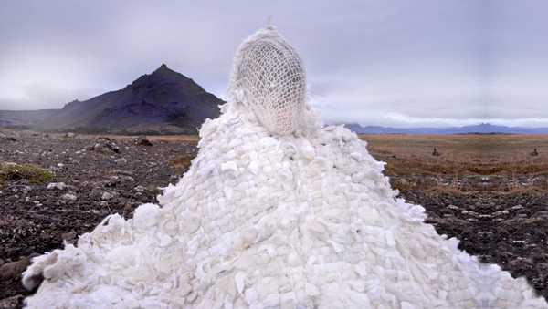

December 22, 2012, 6-9 pm
We Live Our Patient Day's Allotted Span
Little Treats show by Mandy Greer, Paul Margolis, Hazel Margolis

Conflating the private and public -- traveling to places unknown, but working as a unit -- the Mandy Greer-Paul Margolis clan of multi-generational artists set out to engage with the natural environment of Iceland in an intimate and hermetic approach. Through fiber and film, play-acting, intuitive performance, obsessive accumulation of found natural and man-made artifacts, many of the artistic results explore and tear open the archetypes that each family member inhabits.
Through play and repetition, the roles each member played became refracted, as each sometimes embraced, sometimes rejected what seemed inexorably inevitable. The family culture became medium, and that microcosm was expressed in the macrocosm of the geologic, a move that transcends the heartbreak of the day-to-day.
In this way, the emotional force of the child became the slow but constant pressure of a glacier, both a monumentally creative and destructive force. The maternal instinct both emerges and retreats from isolation, like squeezing water from a stone and appositionally, an endless gorgeous torrent of a glacial swollen river. The distant but shelter-building father figure moves earth and fire in an autonomic process of both steadfast strength and hapless misadventure.
Greer writes, "By locating our bodies at the center of this work about familial bonds, we are attempting to confront, repair and heal rifts in our lives that have both made our artistic life together possible and also strained it to near-breaking. In breathtaking geographic isolation, an honesty emerges about the possibilities and failures of blending our roles as artists, parents and partners."
As part of NEPO Little Treats, Mandy and Paul will be cooking Icelandic heart-shaped waffles and Norwegian Rommegrot (cream pudding), and maybe some glogg!
This presentation of photographs, installation sculpture, video, and performance artifacts is but one outcome of Mandy Greer's 'Solstenen Project', a series of residencies over the course of a year exploring themes of weight and physical burden as external symbols of internal self-transformation - identity metamorphosing into the environmental -- including 5 weeks in Iceland in the fall of 2012.
'Solstenen Project' residencies were sponsored in part by grants from 4 Culture, Artist Trust and the Seattle Office of Arts and Cultural Affairs.
NEPO Little Treats is a series of exhibitions, performances and screenings at NEPO House. Our goal is to provide a platform for local artists to show new work and an opportunity for the audience to experience artwork in an intimate setting of a home. Ultimately Little Treats is about hospitality, our encounters with art and with each other. In order to avoid moving too much furniture the shows take place only and entirely in our entry room.